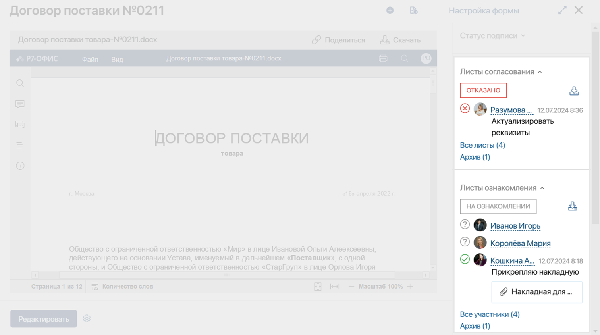
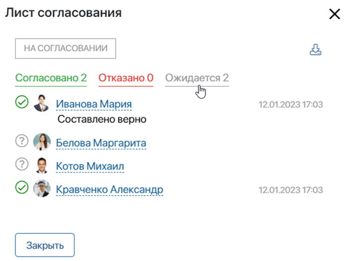
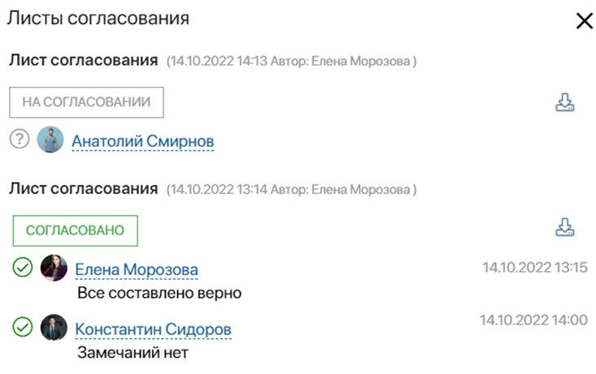
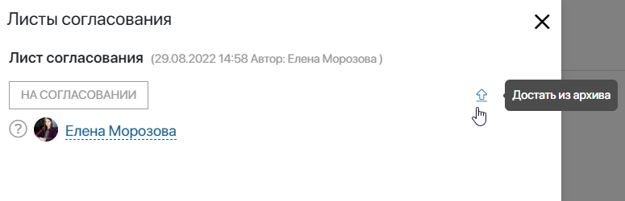
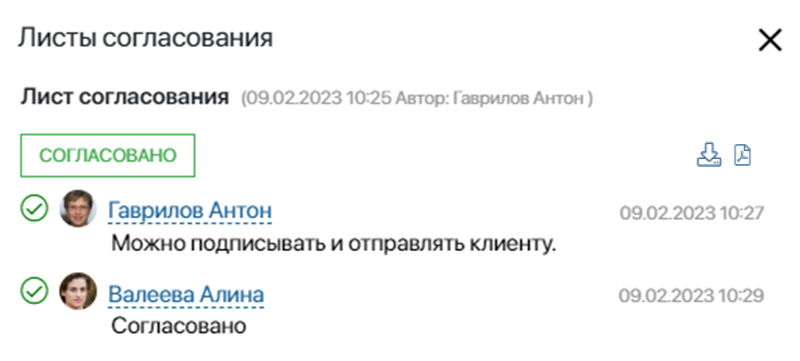
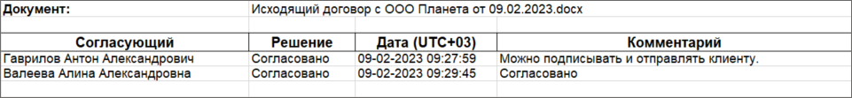

Листы согласования и ознакомления формируются каждый раз, когда документ направляется на рассмотрение, и сотрудникам назначаются соответствующие задачи. Кроме того, в пользовательском процессе можно настроить автоматическое согласование, при котором в карточке документа также создастся лист.
Листы расположены на боковой панели карточки документа и содержат информацию о сотрудниках, выполняющих ознакомление или согласование.
Если пользователь ещё не просмотрел документ, рядом с его именем отображается вопросительный знак. После выполнения задачи в лист добавляется дата и время, принятое решение, комментарий, а также дополнительный файл, загруженный при вынесении резолюции.

Пока исполнители выполняют назначенные задачи, в листе значится статус: На ознакомлении или На согласовании. После завершения процесса формируется окончательная резолюция: Ознакомились или Согласовано/Отказано.
Список участников ознакомления и согласования
Когда документ отправляется на согласование или ознакомление большому количеству сотрудников, вы можете открыть список пользователей и посмотреть, кто из них ещё не выполнил задачу.
Пользователи записываются в список в том порядке, в котором нзначены задачи согласования или ознакомления. Порядок также зависит от зоны ответственности, в которой размещена задача:
- в статической зоне задачи назначатся случайным образом;
- в динамической — в той последовательности, в которой заполнялась переменная, хранящая исполнителей.
Для листа согласования доступна фильтрация по вынесенной резолюции.
Нажмите Все участники в листе, чтобы открыть список. Затем примените нужный фильтр.

Список всех листов ознакомления и согласования
Если документ отправляется на повторное согласование или ознакомление, формируется новый лист. Предыдущие резолюции сохраняются в список Все листы, который можно открыть с карточки документа.

Архив листов ознакомления и согласования
На ознакомление и согласование отправляется определённая версия документа. Пока сотрудники выполняют свои задачи, кто-то может загрузить новую версию документа или изменить его свойства. В этом случае текущий лист может перемещаться в Архив.
Когда один из исполнителей вынесет резолюцию, в карточке документа рядом с листом отобразится статус Отменено. Процесс прервётся, и с остальных пользователей снимется поставленная задача. Тогда ознакомление или согласование по документу запускаются повторно. Архивация позволяет всем участникам процесса отслеживать актуальность листа ознакомления или согласования.
По умолчанию пользователи могут редактировать любые свойства документа, и листы не будут архивироваться. Чтобы это изменить, для каждого приложения задаются Настройки архивации. В них определяется, какие поля из контекста приложения можно редактировать без отправки листов в архив. Также в настройках можно выбрать процессы, которые будут автоматически запускаться при архивации листа ознакомления или согласования.
Вернуть лист согласования из архива
Для согласования документа предусмотрена возможность возвращать листы из архива. Например, если никто из участников ещё не вынес резолюцию, лист достают из архива и процесс согласования продолжается. В противном случае, когда кто-то закроет задачу, согласование прекратится, а для листа отобразится статус Отменено.
Достать лист из архива могут пользователи с правами доступа на редактирование элементов приложения. Для этого на боковой панели карточки документа выберите Архив. В открывшемся окне напротив нужного листа нажмите значок стрелки.

Лист отобразится в карточке как активный.
Отменённый лист согласования можно вернуть из архива, но процесс рассмотрения документа продолжить невозможно. Когда все пользователи выполнят свои задачи, в карточке документа останется окончательная резолюцию Отменено.

Экспорт листа ознакомления или согласования
Вы можете загрузить любой лист ознакомления или согласования на компьютер. Для этого откройте список, в котором хранится лист, и напротив его названия нажмите значок:
- — для экспорта файла формата .xlsx;
 — для экспорта файла формата .pdf. Значок отобразится, если используется пользовательский шаблон для формирования листа.
— для экспорта файла формата .pdf. Значок отобразится, если используется пользовательский шаблон для формирования листа.
Для текущего листа действия доступны в карточке документа рядом с окончательной резолюцией.

Выгруженный лист можно распечатать и, например, приложить к бумажной копии документа. По умолчанию лист содержит название документа, исполнителей и их резолюции, даты принятия решения и комментарии. Если задачу выполнил пользователь, замещающий исполнителя, в выгруженном листе отобразится имя этого сотрудника в скобках.

Кроме того, вы можете настроить пользовательский шаблон .xlsx-файла, по которому формируется экспортированный лист согласования или ознакомления. Тогда внешний вид выгруженного листа изменится. Например, можно выбрать шрифт текста, убрать столбцы из таблицы, вставить логотип компании и т. д.